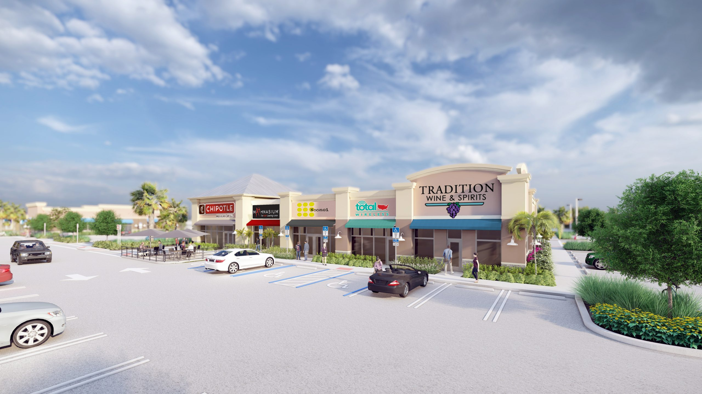

Review the scheduled opening, hardware and project requirements before release. This guide is a coordination checklist for commercial glazing work; the project design team confirms the applicable accessibility criteria.


Review the opening, not just the door leaf
A commercial glass entrance must be coordinated as a complete opening. Use the project's applicable accessibility requirements, door schedule, enlarged plans and hardware submittal together. The U.S. Access Board entrance guide explains the federal provisions; the project team must also confirm applicable state and local requirements.
Clear width and approach space
Check the clear opening using the actual frame, leaf and hardware. Draw the required maneuvering space on both sides where applicable. Approach direction, door swing and hardware affect the review. Use the applicable diagrams in ADA Standards Section 404, rather than a generic clearance table.
Threshold and finish coordination
Review the sill profile with both finished floor elevations, waterproofing and drainage. A low-profile product name does not establish the installed condition. Resolve conflicting elevations before ordering the threshold or placing adjacent finishes.
Hardware and opening force
Confirm the applicable hardware location and operability requirements, then review the closer, latching and opening-force provisions for that door type. Section 404.2.9 distinguishes exterior hinged doors and fire doors from other covered manual doors. Do not apply one force number to every entrance.
Record the selected hardware set and any required field measurements. A binding door, an incorrect closer or a conflicting access-control sequence needs a documented correction, not an assumption based on the leaf size.
Automatic operation is a separate review
If an operator is proposed, identify whether it is full-powered, low-energy or power-assisted. Coordinate the relevant operating standard, controls, approach, egress and power-off conditions. See the automatic entrance coordination guide.
Keep glass and code requirements separate
Review safety glazing, impact protection, fire ratings and any visibility markings under the project's governing requirements. They are separate selection questions. Identify the specified assembly and supporting documents instead of assuming a glass thickness or marking detail works for every opening.
Pre-installation coordination checklist
- Opening marks match the door schedule, enlarged plans and hardware sets.
- Clear dimensions reflect the proposed frame, leaf and hardware.
- Threshold, floor finishes and waterproofing details agree.
- Hardware and operator interfaces have named scope owners.
- Design and review comments affecting size or hardware are closed before release.
- Acceptance checks, records and any return visit are assigned.
Send the plans, door schedule and hardware sets for ACG's commercial glazing scope review. Include the project location, bid date and any unresolved design comments. ACG's proposal should identify its scope and coordination assumptions for that project.
Frequently asked questions
Does a nominal door size prove accessible clear width?
No. Check the clear opening using the selected frame, leaf and hardware geometry. Nominal leaf width is not the finished clear opening.
Do all commercial doors have the same opening-force requirement?
No. Identify the door type and applicable requirements before selecting a closer or operator. The ADA manual-door provision treats exterior hinged doors and fire doors differently from other covered doors.